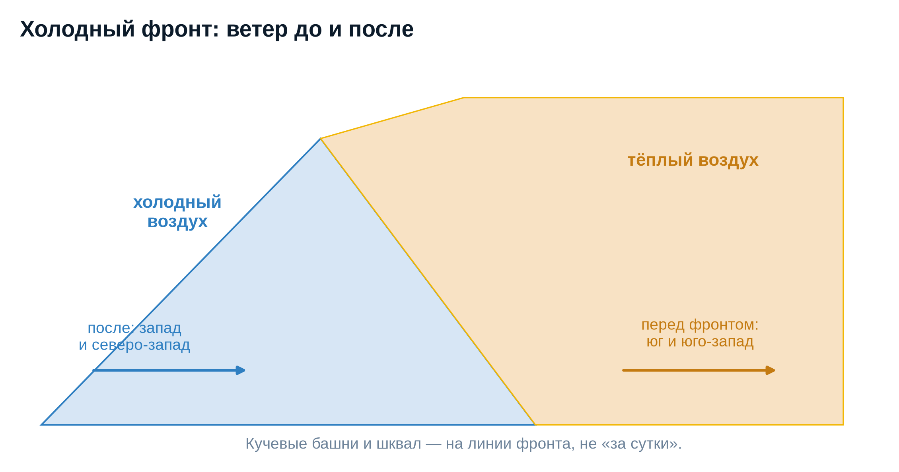

Модуль 3 · Погода в горах
3.2. Фронты, грозы и прогноз
Черновик для замечаний к тексту и к рисункам. Курс не опубликован и не даёт допуска. Рисунков в уроке: 1, они стоят под текстом.
Тёплый и холодный фронты
Атмосферный фронт — переходная зона между двумя соседними воздушными массами с разными свойствами: температурой, влажностью и плотностью. В тёплом фронте тёплый воздух натекает на клин холодного и медленно поднимается по нему. Так образуется система облаков шириной четыреста — восемьсот километров, и она приходит в одном и том же порядке. Сначала перистые облака в виде параллельных нитей или волокон, которые со временем уплотняются, затем перисто-слоистые, часто с гало, светящимся кругом вокруг Солнца или Луны. Потом идут высоко-слоистые и, наконец, слоисто-дождевые с долгими осадками, а давление при этом падает. Если перистые нити густеют и давление падает, приближается тёплый фронт с ухудшением погоды.
Короткое правило, которое ждут на аттестации, звучит так: перисто-слоистые облака и гало оставляют запас до шести часов. На деле от гало до осадков чаще проходит двенадцать — двадцать четыре часа, а в горах рельеф может пригнать непогоду быстрее, чем на равнине. Шесть часов — не обещание ясной погоды, а срок, к которому группа уже должна быть в безопасности. Читать их как разрешение добрать вершину значит оставить пустой запас, когда осадки уже рядом. Гало сверяют с барометром и с тем, густеют ли нити, а не с одним кругом вокруг солнца. На бланке отвечают «до шести часов», на гребне считают, что к этому времени нужно уже быть ниже.
Холодный фронт устроен иначе: холодный воздух подныривает под тёплый и резко выталкивает его вверх, поэтому всё происходит быстро и бурно. Перед холодным фронтом ветер южный или юго-западный и усиливается. На западный и северо-западный он поворачивает уже при прохождении фронта и после него: принять западный ветер за признак «ещё до фронта» — частая путаница. Появляется дымка, хотя небо ещё чистое, давление падает, а иногда перед самым фронтом бывает обманчивый просвет. Главный признак — высокие кучевые облака в виде башен или рваных хлопьев при быстром падении давления. По ширине холодный фронт меньше тёплого, но осадков даёт больше и часто приносит грозы и шквалы. Шквал — резкий короткий порыв ветра перед грозой или холодным фронтом; на гребне он может сбить с ног, поэтому к его приходу нужно уже уйти вниз. После фронта давление быстро растёт, становится холодно и ясно; кто ждёт просвета наверху, встречает шквал уже без безопасного спуска.
Гроза на горе
Грозы, особенно местные, развиваются очень быстро, и почти всегда их можно заметить заранее, если смотреть, как растут кучевые. Облако-башня — слишком вытянутое по вертикали облако: гроза может начаться в любой момент. Если такая башня одна на общем фоне, скорее всего, будет короткий ливень с грозой. Если облака громоздятся массами с тёмными основаниями, возможна затяжная сильная гроза. Тревожные детали — вогнутая тёмная нижняя сторона, где идут сильные восходящие потоки, и плоская вершина-наковальня, вытянутая в одну сторону. Ждать грома, чтобы признать башню грозой, значит опоздать: к первому удару группа должна уже сходить с гребня.
Рядом с башней собираются и другие признаки близкой грозы. Душно и безветренно, кучевые быстро растут, основания темнеют. Облака уже в семь — девять утра — плохой знак на вторую половину дня, когда грозы случаются чаще всего. Между вспышкой и громом считают секунды: каждые три секунды — около километра. Если гром слышен меньше чем через тридцать секунд после вспышки, гроза ближе десяти километров, и это уже опасно. Правило тридцать на тридцать устроено по этим двум порогам: такой гром значит, что пора укрываться, а продолжать движение можно не раньше чем через тридцать минут после последнего грома. Признаки сильного электрического поля бывают даже при ясном небе: волосы поднимаются, металл жужжит, на остриях снаряжения видны искры, а у тёмной стены облаков налетает шквал. При таких признаках с гребня уходят, не дожидаясь дождя.
Самые опасные места — вершина и гребень: молния бьёт в выступающие точки рельефа, поэтому первое действие — уйти как можно ниже. Палатка не защищает. Под нависанием скалы ток может пройти искрой через тело, поэтому сидят не ближе метра от стен. Ищут сухое место, нишу или ложбину без стока воды, и не подходят к водопадам и ручьям. Телефон и рация молнию не притягивают. На аттестации иногда ждут ответа «выключить связь»; на практике связь оставляют включённой, потому что после удара нужно вызвать помощь. Металл не держат выше головы. На аттестации отвечают, что железные предметы складывают подальше от себя; на практике ледорубы, палки и скальное железо убирают в стороне от группы и лучше ниже по склону, а не в пятидесяти метрах выше, потому что на гребне такой отход отнимает время, которого нет.
Затем приседают на сложенный коврик или сухую верёвку, ноги вместе, голову вниз, руками обхватывают колени, и на землю не ложатся. Шаговое напряжение возникает, когда ток молнии растекается по земле: разность потенциалов появляется между широко расставленными ногами или вдоль лежащего тела. Поэтому ноги держат вместе, а позу лёжа не принимают даже на камне, который кажется сухим. Школа NOLS и Служба национальных парков США советуют рассредоточить группу хотя бы на пятнадцать метров, чтобы один удар не вывел из строя всех и было кому помочь, и не двигаться раньше чем через тридцать минут после последнего грома. Ранний выход, потому что дождь уже кончился, возвращает людей на гребень, пока гроза ещё рядом.
Приметы и прогноз
Признаки ухудшения видны и без прогноза, решение принимают по их совпадению. Давление падает, утренняя роса долго не высыхает, облака появляются уже в семь — девять утра. Перистые сами по себе говорят о скором изменении погоды, а если они густеют и затягивают небо — о приближении фронта. Над вершинами висят линзы, вокруг Солнца или Луны видно гало, облака на разных высотах идут в разные стороны. Ночью теплее, чем обычно, сбился привычный цикл горно-долинных ветров, инверсионный след самолёта не тает и долго висит. На аттестации классический набор звучит так: атмосферное давление падает, появляются перистые облака, вокруг Луны появляется гало. Два-три тревожных признака сразу — повод пересмотреть план и время разворота. Один перистый клок без падения давления ещё не повод ждать полного набора: так группа задерживается на гребне.
Обратные признаки говорят, что погода держится или улучшается, и они тоже не гарантия. Атмосферное давление растёт или стабильно, ночью холодно, небо ясное, утром обильная роса. Низкий ночной туман в долинах, который расходится утром, говорит об устойчивой хорошей погоде: он рассеивается сразу после восхода или в течение двух часов после рассвета. Днём появляются небольшие кучевые, к вечеру они тают. Горно-долинный ветер дует по расписанию, днём вверх и ночью вниз, а вечером стихает. На аттестации признак улучшения формулируют так: атмосферное давление растёт, ночью холодно, туман рассеивается сразу после восхода солнца. Росу после холодной ясной ночи читают как хороший признак, росу, которая долго не высыхает, — как плохой. Хорошие приметы не отменяют послеобеденную местную грозу летом, поэтому время разворота назначают всегда.
Горные прогнозы есть на сайтах yr.no, meteoblue, mountain-forecast и у местных служб и спасателей, которые знают район. В основе сайтов лежит численная модель атмосферы. Европейская ECMWF считает на сетке около девяти километров, американская GFS и немецкая ICON — около тринадцати, у Гидрометцентра России есть своя глобальная модель ПЛАВ. В такой сетке горы сглажены, поэтому смотрят нужную высоту. Берут три высоты: старт, середину маршрута и вершину; для Эльбруса это примерно три тысячи шестьсот, четыре тысячи шестьсот и пять тысяч шестьсот метров. Кроме температуры смотрят ветер, осадки и нулевую изотерму. Нулевая изотерма — высота, где температура воздуха ноль градусов: ниже осадки идут дождём, выше снегом, а если изотерма поднимается высоко, снег на маршруте раскисает, растут лавинная опасность и камнепад.
Модель прогоняют десятки раз с чуть разными начальными данными, и такой набор прогонов называют ансамблем. Сходятся прогоны — прогноз надёжнее, расходятся веером — погода неустойчива. Многие сервисы показывают мультимодельный, то есть сводный, прогноз нескольких моделей, и когда ECMWF, GFS и ICON расходятся, к цифре относятся осторожнее. С 2025 года европейский центр выпускает прогноз на основе искусственного интеллекта, ECMWF AIFS. На маршруте свежий прогноз можно получить через спутниковый мессенджер. Местную грозу над конкретным хребтом не предскажет ни одна модель, последнее слово за небом и барометром. По доверию срок такой: на трое суток прогноз обычно надёжен, при неустойчивой погоде даже к трём — четырём дням относятся осторожно, в устойчивом антициклоне можно смотреть на пять — семь дней.
Короткий местный прогноз и ветры хребта
Краткосрочный местный прогноз на шесть — двенадцать часов не заменяют перечнем примет. Ведут короткий журнал: давление каждые три часа, направление и сила ветра, облака, вечером температура и близость точки росы. Журнал сверяют с моделью, а не подменяют ею. Письменный вывод называют ожидаемое, уверенность и порог: решение меняют, если давление упадёт ещё на заранее назначенную величину или если башни вырастут до полудня. За ночь давление упало на четыре гектопаскаля, утром перистые густеют, ветер с юга усилился — это тёплый фронт, и выход на гребень переносят, даже если клиент уже собрался. Правило, по которому ветер показывает, где циклон: встают спиной к ветру, и центр низкого давления оказывается слева впереди. Так отличают фронт, который уходит, от фронта, который только подходит.
Фён — тёплый сухой ветер с хребта: резкое потепление, прозрачный воздух и линзы, которые могут висеть днями и не означать тёплый фронт. Для лавин он опасен быстрым прогревом снега, и ясное небо этого прогрева не отменяет. Ледниковый, или стоковый, ветер дует вниз по леднику, часто ночью и утром, и его путают с горно-долинным. Горно-долинный ветер обычно два — пять метров в секунду, а не шестьдесят — семьдесят километров в час: такие скорости — уже фён или сток. На гребне и открытом леднике при ветре сильнее примерно пятнадцати метров в секунду с клиентами не работают, потому что человека срывает, а страховку не удержать. Зимой и в межсезонье добавляют снегопад: интенсивность, видимость и метель, и это вход в разговор о лавинах. Принять фён за обычный горный ветер значит либо отменить выход из-за спокойного стока, либо выйти под срывной ветер. Этот текст — только теория и не даёт допуска на маршрут: навык заметить фронт, грозу и смену ветра приобретают очно.
Рисунки урока
